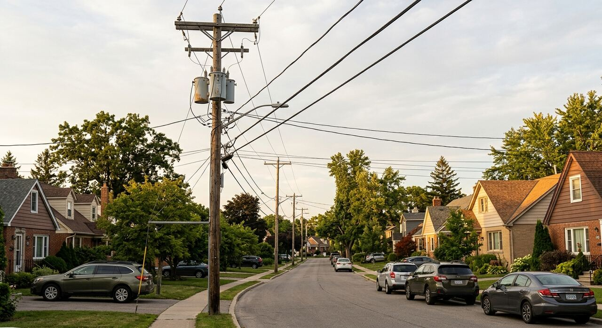
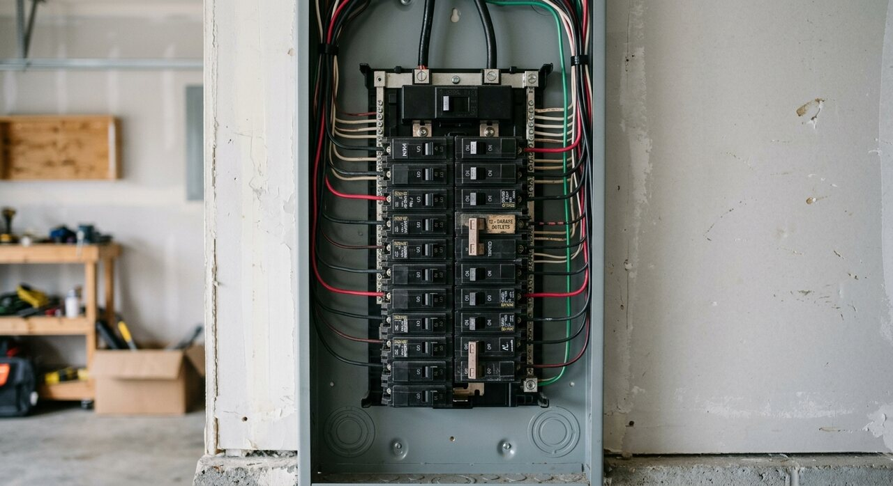
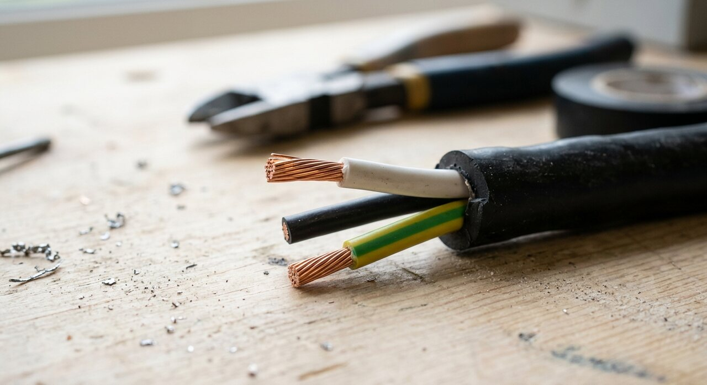
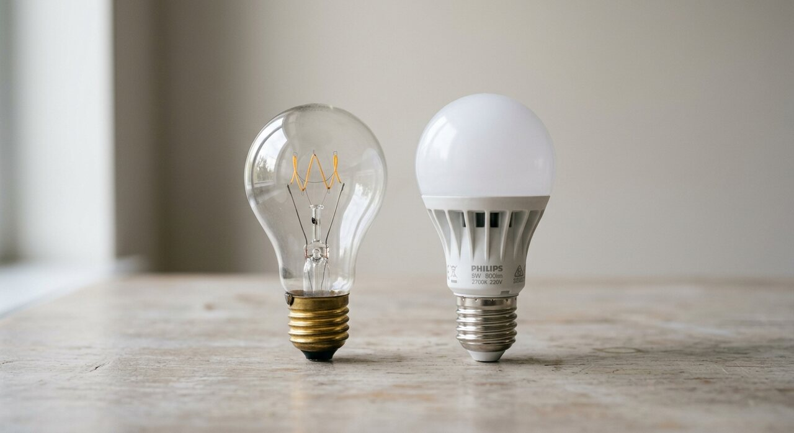
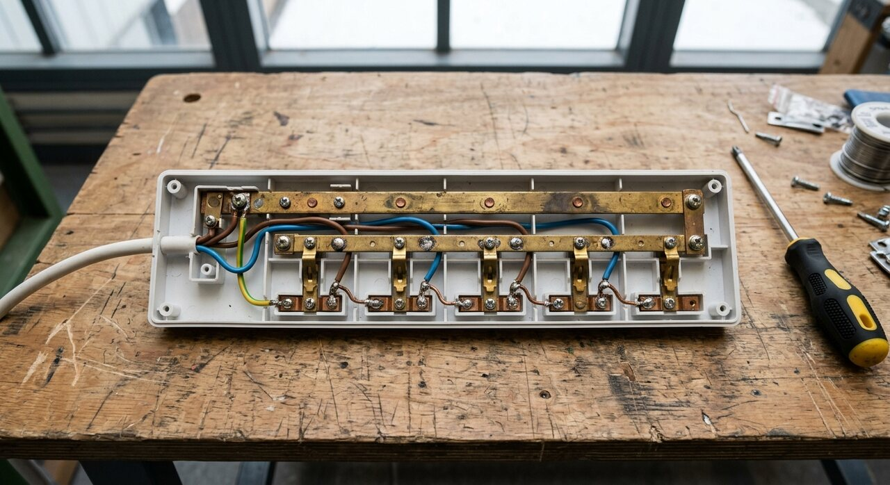

01
A Complete CircuitUn circuito completo

02
Circuit BreakersDisyuntores

03
InsulationAislamiento

04
The Ground WireEl cable de tierra

05
OpenSciEd Unit P.1 · Lesson 2
In class you took apart a power strip and found two separate, unbroken metal paths. This reading explains how buildings use the same idea. Five short sections on circuits, breakers, insulation, ground wires, and light bulbs.
En clase desarmaste una regleta de enchufes y encontraste dos caminos de metal separados e ininterrumpidos. Esta lectura explica cómo usan la misma idea los edificios. Cinco secciones cortas sobre circuitos, disyuntores, aislamiento, cables de tierra y bombillas.

Scroll
Desplázate



